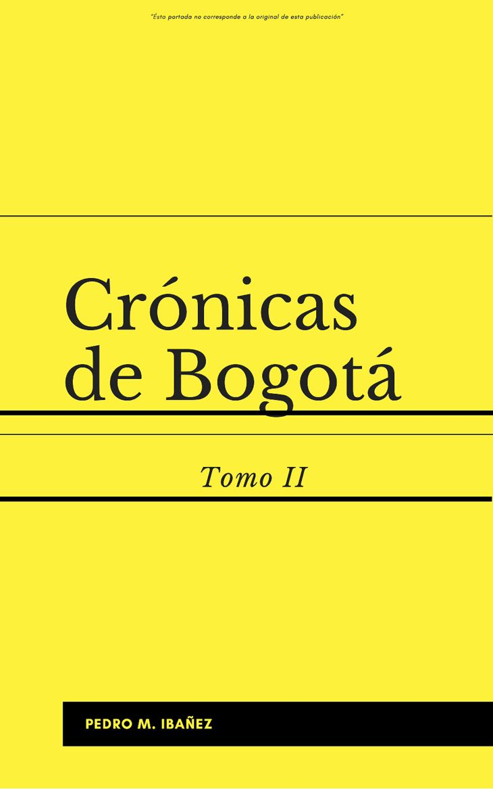

01 / 03
Crónicas de Bogotá – Tomo II
- Autoría
- Pedro María Ibáñez
- Fecha
- 1951 (edición consultada)
- Tipo
- Crónica histórica
- Lugar
- Plaza de Bolívar
- Temas
- Pasado
- Mirada
- La tradicional
- Impacto
- Me dejó algo
- Reacción
- Deja pensando
«Uno vuelve siempre a los viejos sitios donde amó la vida».
— Armando Tejada Gómez, «Las simples cosas»
Bogotá no siempre ha sido la ciudad que conocemos hoy. Sus calles han cambiado de nombre y de apariencia, sus paisajes se han transformado y los lugares que alguna vez fueron escenarios de la vida cotidiana han adquirido nuevos significados. Sin embargo, basta detenernos un momento para descubrir que el pasado no ha desaparecido por completo: permanece en las construcciones, en los relatos, en las imágenes y en las huellas que todavía forman parte de nuestro presente.
Esta colección reúne obras que nos permiten acercarnos a distintas Bogotás: la que fue narrada por sus cronistas, la que quedó registrada en fotografías y la que hoy se reinventa a través de nuevas expresiones artísticas. Cada una ofrece una manera diferente de observar el paso del tiempo y reconocer las transformaciones de la ciudad.
Desde las crónicas de finales del siglo XIX hasta las expresiones musicales contemporáneas, estas obras nos invitan a recorrer espacios que han tenido distintas vidas. Nos recuerdan que un lugar nunca es solamente lo que vemos en él: también es aquello que ocurrió, las personas que lo habitaron y las historias que siguen acompañándolo.
Volver al pasado no significa quedarse en él. Significa mirar nuestra ciudad con otros ojos, reconocer lo que ha cambiado y preguntarnos qué permanece en medio de tantas transformaciones.
¿Cuántas ciudades distintas pueden existir dentro de una misma Bogotá?
Recorrer las obras ↓COLECCIÓN 02 / 07
La ciudad que fuimos, la ciudad que permanece.

01 / 03
¿Cómo era Bogotá cuando sus plazas eran también escenarios de la vida cotidiana?
En Crónicas de Bogotá – Tomo II, Pedro María Ibáñez reconstruye distintos momentos de la historia de la capital. A través de una reseña histórica que aborda desde la llegada de la imprenta y su influencia en la literatura y la política de la Nueva Granada hasta el grito de independencia, la obra permite acercarnos a los acontecimientos y procesos que marcaron la formación de la ciudad.
La Plaza de Bolívar, como espacio representativo de esta colección, nos invita a pensar en los lugares que han acompañado la historia de Bogotá. Sus transformaciones no solo pueden observarse en los cambios arquitectónicos o urbanísticos, sino también en las actividades, encuentros y acontecimientos que han tenido lugar allí.
Acercarse a esta obra es descubrir una ciudad distinta de la que recorremos actualmente. Sus páginas nos permiten reconocer que Bogotá ha sido muchas ciudades a lo largo del tiempo y que conocer sus historias también es una forma de comprender el presente.
Bogotá cambia constantemente. Sus calles, parques, plazas y paisajes adquieren nuevos significados con el paso del tiempo. Sin embargo, en muchos de esos lugares permanecen historias, recuerdos y huellas de quienes los han habitado.
Te invitamos a elegir un lugar de Bogotá y compartir cómo lo recuerdas, cómo lo percibes actualmente y qué transformaciones reconoces en él. No necesitas ser historiador ni conocer todos los detalles de su pasado. Nos interesa tu mirada y aquello que quieras compartir.
¿Qué ha cambiado en Bogotá y qué permanece?
Puedes contarnos tu experiencia y, si lo deseas, adjuntar una fotografía. La participación es voluntaria.
Compartir mi historia ↗Hay lugares, afectos y momentos que el tiempo transforma, pero que permanecen de alguna manera en nosotros. A veces una canción basta para regresar a ellos, para recordar aquello que vivimos y reconocer las pequeñas cosas que dieron sentido a nuestros días.
En la voz de Mercedes Sosa, «Las simples cosas», de Armando Tejada Gómez y César Isella, nos invita a volver sobre aquello que alguna vez amamos y que sigue acompañándonos.
«Uno vuelve siempre a los viejos sitios donde amó la vida».
Mercedes Sosa · «Las simples cosas» · Composición de Armando Tejada Gómez y César Isella. Reproducción mediante el reproductor integrado de YouTube.
¿Cómo se veían los paisajes, las costumbres y los territorios de Colombia durante el siglo XIX? La colección de José María Gutiérrez de Alba reúne materiales visuales y relatos que nos permiten acercarnos a otras formas de representar y recorrer el país.
Sus imágenes nos invitan a descubrir paisajes de otra época y a observar cómo se imaginaban y registraban los lugares que hoy reconocemos como parte de nuestra historia.
Colección de José María Gutiérrez de Alba · Biblioteca Digital de Bogotá.
Explorar la colección ↗La transformación de un lugar no borra necesariamente aquello que ocurrió en él. En el Bronx Distrito Creativo, las huellas del pasado conviven con nuevas expresiones artísticas y culturales que proponen otras maneras de habitar e imaginar la ciudad.
Si quieres profundizar en la historia del territorio, sus transformaciones y la presentación musical de Chell, te invitamos a recorrer nuestra exposición digital.
Explorar Fluyendo por Bogotá ↗